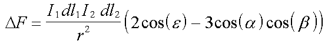

"VACE" stands for Virtual Ampere Current Element. These are disk or torus shaped magnets which are circularly magnetized so that all the "magnetic flux" remains within the magnetic material.
It has been suggested that the force between such magnets may follow Ampere's force equation for the force between two current elements. If these magnets do follow Ampere's force law then, as I show below, it should be possible to construct a self-rotating motor. That is, a motor with no energy input.
In fact, I saw that the interaction of VACE magnets, or any other kind of material, need only follow the "angular" term of Ampere's force law for a self-rotating motor to be realizable.
Here is some general information to one such VACE motor I invented.
More details for torque calculations.
Interactive program to calculate the net "relative" torque on the VACE torus.
Proof that the force FL = - FR for this torus setup.
Tom Phipps has done several experiments involving "VACEs". His results are not encouraging for the idea of Amperian current elements as circularly magnetized ring magnets. Here is his report. (Tom also comments on the Marinov motor.)
Ampere's force law:

Usage Note: My work is copyrighted. You may use my work but you may not include my work, or parts of it, in any for-profit project without my consent.